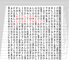

COMP 526 – Applied Algorithmics (Spring 2021)
This is an archived version of this module from Spring 2021.
Click here for the current iteration.

Applied Algorithmics (COMP 526) is a second-term masters module on efficient algorithms and data structures. It covers a few fundamental results in algorithms and data structures plus more advanced topics, with an emphasis on methods that are useful in applications.
Quick links
Lecture ⋅ Canvas ⋅ Campuswire ⋅ Syllabus
Teaching Evaluation
Below are the results of the University’s end-of-module survey.
Administrativa
There will be synchronous interactive online lectures starting in the week of Feb 8. Live participation is expected, but all sessions are also recorded.
Our regular lecture slots are
- Tuesday 11:00 – 12:30
- Wednesday 11:00 – 12:30
Please note the following exception: We will meet already on Monday (Feb 8), 16:00, instead of the Tuesday (Feb 9) slot; this is only in the first week of classes, though. If you are registered for the module, you should see this reflected in your timetable.
Tutorials
There will be small-group tutorials, run by Ben Smith. The tutorial groups will meet
- Wednesdays 16:00 – 17:00,
- Fridays 11:00 – 12:00, resp.
- Fridays 13:00 – 14:00.
You are assigned to one of the groups by the timetabling team; check your personal timetable.
Campuswire
We will use Campuswire as the primary communication channel for this module, in particular for questions & answers, discussions, and announcements; (see features of the platform for Q&A and chat).
Please register and join COMP526 on Campuswire. You are very welcome to join ahead of term 2!
Canvas
We will use the university’s official learning management system Canvas for quizzes (class tests and final exam). If you are registered for the module, you will automatically be enrolled for COMP526 on Canvas.
Syllabus
The module will consist of the following units (covering roughly a week of lectures each, but that’s only true on average):
- Unit 0 – Administrativa & Proof Techniques
- Unit 1 – Machines & Models
- Unit 2 – Fundamental Data Structures
- Unit 3 – Efficient Sorting
- Unit 4 – String Matching
- Unit 5 – Parallel String Matching
- Unit 6 – Text indexing
- Unit 7 – Compression
- Unit 8 – Error-Correcting Codes
- Unit 9 – Range-Minimum Queries
Exam & Assessment
The final grade for the module is the weighted average of
- the final exam (50%) and
- continuous assessment.
This will consist of- a video presentation (10%),
- programming puzzle 1 (10%),
- programming puzzle 2 (10%),
- several class tests (15% in total), and
- bonus marks for good participation (5%);
More detail will be provided in class (see Unit 0).
Note that exam papers of previous iterations are available from the department (intranet). These remain excellent training grounds for the final exam, but note that there have been minor changes in the covered material.
Further reading
There are many good algorithms textbooks, but no single definitive one that covers all topics of this module (in the way I want them presented!). Indeed, I have been cherrypicking the – in my opinion – most suitable descriptions from a variety of sources; check the individual units for details.